Vehicle Expenses Automated — full illustrated user manual (HTML for browsers). Edit source: docs/i18n/nl/user-manual.md; regenerate with ./scripts/render-user-manual.sh.
Bron bewerken (Markdown). Browsers en de in-app-lezer openen de gerenderde HTML:
- Web:docs/user-manual.html(opnieuw genereren met./scripts/render-user-manual.sh)
- App: Help / Over → volledige handleiding (gebundelde HTML + screenshots)Wijs eindgebruikers niet naar onbewerkte
.mdURL's; browsers tonen alleen platte tekst.
Camera-first tracking voor tankbeurten en voertuigkosten, met optionele synchronisatie en back-up van meerdere apparaten onder uw cloudaccounts.
Dit is de volledige handleiding (screenshots + elke stap). Aan de telefoon is Menu → Help een kortere handleiding om aan de slag te gaan.
Hier niet behandeld: Importeer oude afbeeldingen, Uitlijningsexperiment en Pompexperiment (ontwikkelaar / geavanceerde tools).
Deze verschijnen op de hoofdschermen. Als je ze kent, bespaar je een hoop jacht.
| Waar | Icoon / controle | Wat het doet |
|---|---|---|
| Bovenbalk | ☰ Menukaart (hamburger) | Opent de navigatielade |
| Bovenbalk | ⓘ (paginahulp) | Korte hulp voor de huidige pagina (naast menu indien beschikbaar) |
| Bovenbalk | ?N (geel) |
In behandeling zijnde importcontrolevragen - opent Importcontrole |
| Bovenbalk | ! (rood) | Een spreadsheet of fotobestemming is onlangs mislukt. Open Synchroniseren om het probleem op te lossen |
| Bovenbalk | ☰ + ← | Rapport kinderen en onkostenlijst tonen menu en terug samen; Rapportenhub is alleen menu |
| Instellingen / brandstof bewerken | ← | Terug (instellingenspreadsheet/foto en brandstofbewerking blijven teruggefocust) |
| Snel invullen | Witte cirkel (sluiter) | Leg kilometerteller- of pompweergave vast voor OCR |
| Snel invullen | Schijf / Opslaan | Bespaar de tankbeurt (heeft een voertuig nodig en minstens één van odo / volume / kosten) |
| Snel invullen | ↕ pijlen (modusschakelaar) | Schakel tussen de kilometertellermodus en de pompmodus (kosten/volume). Groene rand markeert de actieve veldgroep |
| Snel invullen | ↔ pijlen (tussen kosten en volume) | Wissel kosten en volume om als OCR ze in de verkeerde velden plaatst |
| Snel invullen | Zoom 1x / … | Zoomverhoudingen van de camera wanneer de lens deze ondersteunt |
| Snel vullen (na vastleggen) | Vernieuwen op hoofdknop | Voorbeeld negeren en terugkeren naar livecamera |
| Snel vullen (tijdens verwerking) | X op hoofdknop | Lopende opname/OCR annuleren |
| Kosten | Opslaan | Bespaar de kosten |
| Kosten | Sluitercirkel | Maak een ontvangstfoto |
| Kosten | Galerij | Kies een bonafbeelding uit de bibliotheek |
| Kosten | Herkansing | Wis de huidige bonfoto en maak opnieuw een foto |
| Uitgaven / Voertuigen beheren | + / − FAB's | Zoom in op het fotovoorbeeld |
| Dialoogvenster Oriëntatiepunten | OCR bewerken | Corrigeer of voeg oriëntatiepunttekst toe die de motoren hebben gemist |
| Spreadsheet / Fotoformulieren | 🔍 Zoeken | Blader door Google Drive naar een blad of map (na inloggen) |
Valutasymbolen op kostenvelden en G/L op volumevelden kunnen worden aangetikt: open een klein menu om de valuta of gallons versus liters voor die invoer te wijzigen.
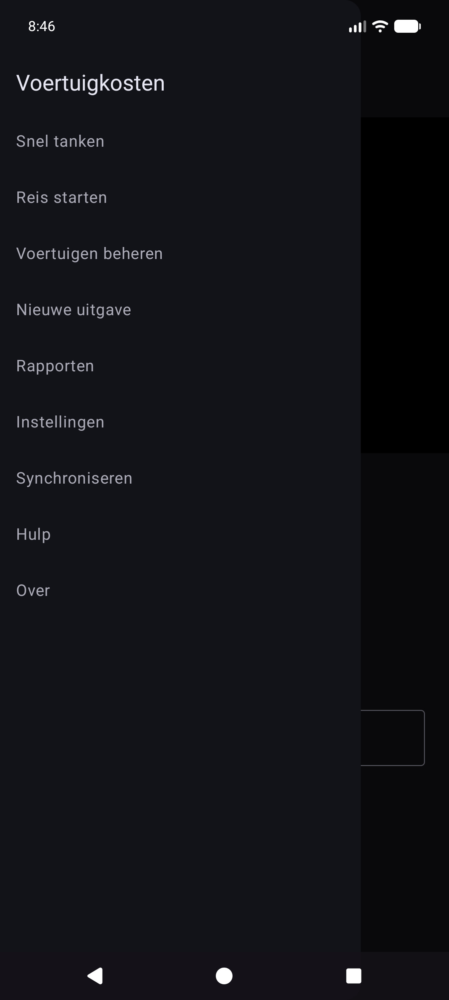
Hoofdlade: Snel tanken · Start reis · Beheer voertuigen · Nieuwe uitgaven · Rapporten · Instellingen · Synchroniseren · Help · Info.
Experimentlade (Instellingen → Experimentschermen tonen): Uitlijningsexperiment · Pompexperiment · Oude afbeeldingen importeren.
Via Rapportenhub (niet hoofdlade): Onkostenlijst · Vulgeschiedenis.
OCR en automatische voertuigmatching werken het beste nadat u elk voertuig registreert met een referentiedashboardfoto, de kilometerteller bijsnijdt en Discovery uitvoert, zodat de app oriëntatiepunttekst voor dat dashboard opslaat. (Hoe oriëntatiepunten worden gekozen en op elkaar afgestemd, zal in een latere update gedetailleerder worden gedocumenteerd.)
Menu → Voertuigen beheren. Kies een voertuig (of Nieuw voertuig toevoegen).
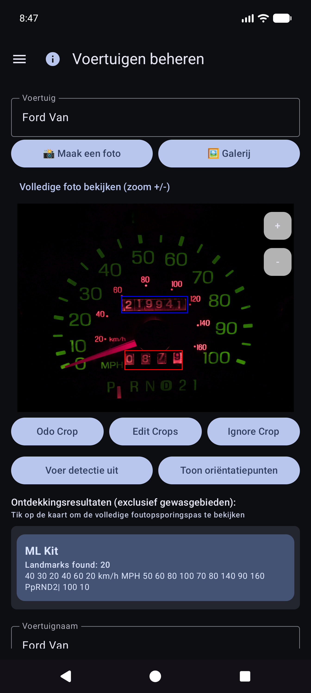
Blader na Oriëntatiepunten weergeven door de lijst en corrigeer de waarden. Motoren missen soms kleine cijfers (bijvoorbeeld een klok 60 rechtsonder in het cluster). Gebruik OCR bewerken om ze toe te voegen of te corrigeren, zodat de voertuigidentiteit betrouwbaar blijft.
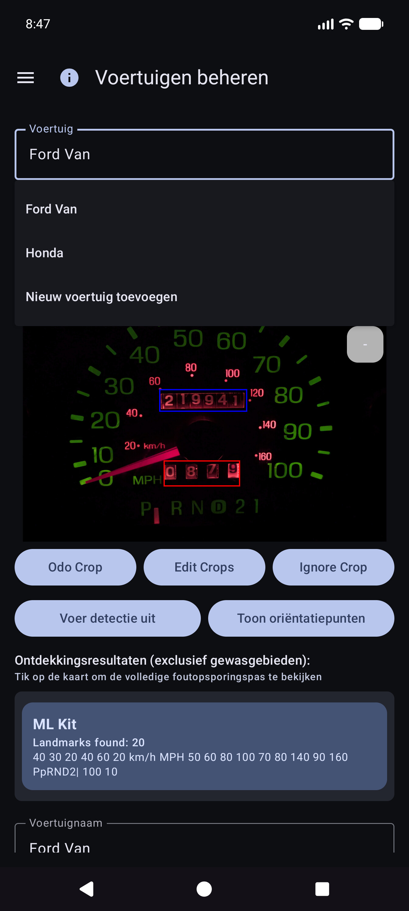
U kunt de app nog steeds gebruiken door een voertuig te selecteren en de kilometerteller, het volume en de kosten te typen in Snel invullen. OCR is optioneel voor elk veld. Galerijimport werkt voor de referentiedashfoto als u liever niet in de app fotografeert.
Tip: Na de spreadsheetsynchronisatie staan voertuigdefinities (gewassen, oriëntatiepunten) in de lokale database. U hoeft Voertuigen beheren voor Snel vullen niet opnieuw te openen om ze te gebruiken.
De app is zo gebouwd dat meerdere telefoons of tablets dezelfde wagenparkgegevens kunnen delen, en dat u een kopie van uw gegevens en foto's buiten het apparaat kunt bewaren. Dat wordt gedaan met bestemmingen die u configureert onder uw accounts of uw zelfgehoste servers – niet een door het bedrijf beheerde “Voertuigkostenwolk” die andere mensen kunnen zien.
| Soort | Wat het opslaat | Typisch gebruik |
|---|---|---|
| Spreadsheet-/tabelsynchronisatie | Voertuigen, tankbeurten, uitgaven (rijen en tabbladen) | Samenvoegen van meerdere apparaten + gestructureerde back-up |
| Fotoback-up | Binaire afbeeldingen (streepje/pomp/bon/referentiefoto's) | Fotoback-up + ontbrekende bestanden herstellen |
U kunt meerdere bestemmingen van elk type configureren (soft cap per type). Handmatige Nu synchroniseren en achtergrond-werknemers voeren de ingeschakelde werkrollen uit.
Inloggen en tokens blijven op het apparaat staan voor de providers die u kiest (Google, Microsoft, S3-sleutels, zelf-gehoste URL's, enzovoort). Bestemmingen staan onder volledige controle van de gebruiker: uw Google-account, uw OneDrive, uw MiniIO-bucket, uw EtherCalc-host, enz. Er wordt niets gedeeld met andere Vehicle Expenses-gebruikers via een gedeelde backend.
Geconfigureerd onder Menu → Synchroniseren → Spreadsheetsynchronisatie (ook bereikbaar via de samenvattingsrijen van Instellingen). Eersteklas pickeropties:
| Doel | Opmerkingen |
|---|---|
| Google Spreadsheets | Gemeenschappelijke standaard; tabbladen voor voertuigen, kosten en brandstof per voertuig |
| Excel | Microsoft-werkmap via binding in Graph/OneDrive-stijl |
| EtherCalc | Zelf-gehoste samenwerkende spreadsheetruimtes |
| Andere → geïmplementeerde backends | Baserow, NocoDB, Airtable, PocketBase, Supabase, Firebase, Zoho Sheet |
Uitgesteld / nog niet headless (vermeld onder Overige maar nog niet volledig geïmplementeerd): OnlyOffice, Collabora. Zie ook self-host index.
CSV exporteren/importeren (ZIP met dezelfde tabbladindeling) is via Instellingen beschikbaar als draagbare back-up, onafhankelijk van livesynchronisatie.
Geconfigureerd onder Menu → Synchroniseren → Fotoback-up (ook vanuit de overzichtsrijen van Instellingen):
| Doel | Opmerkingen |
|---|---|
| Google Drive | Map die u kiest (blader of plak URL) |
| OneDrive | Microsoft-account + padvoorvoegsel |
| S3 | AWS, Wasabi, Cloudflare R2, MinIO en andere S3-compatibele eindpunten |
| Anders | door rclone ondersteunde opslag (bijv. WebDAV, SFTP en andere beheerde afstandsbedieningen beschikbaar in de in-app-kiezer) |
Stel cheatsheets in voor zelfgehoste foto- en tabeldoelen: self-host index.

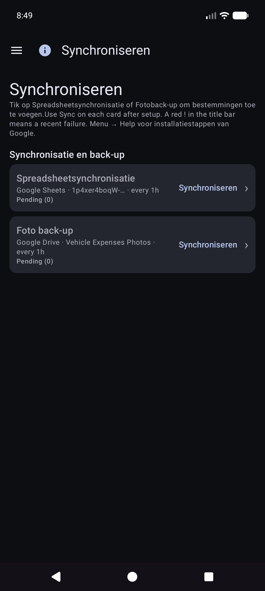

Voertuigen, Uitgaven, Brandstof - {voertuignaam}.

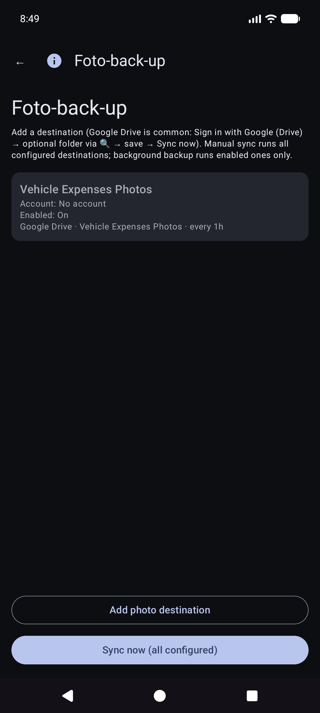
Handmatig Nu synchroniseren voor foto's is een volledige doorgang; back-up op de achtergrond verwerkt uploads die alleen in behandeling zijn doorgaans volgens een schema.
Dit is het startscherm wanneer u de app opent.
U hoeft niet eerst het voertuig te kiezen. Wanneer voor voertuigen oriëntatiepunten zijn ingesteld in Voertuigen beheren, detecteert Snel invullen automatisch welk voertuig op de dashboardafbeelding nadat u de kilometerteller hebt vastgelegd. U kunt indien nodig nog steeds de vervolgkeuzelijst Voertuig openen om deze te overschrijven.
Blijf in de kilometertellermodus en kader het cluster in. Instructie: * Richt op de kilometerteller. Tik op de sluiter om vast te leggen.*

OCR vult Odo en probeert het voertuig te matchen op basis van oriëntatiepunten (bekijk beide indien nodig). De hoofdknop wordt Opnieuw proberen om opnieuw te schieten. Instructie vat de lezing samen.

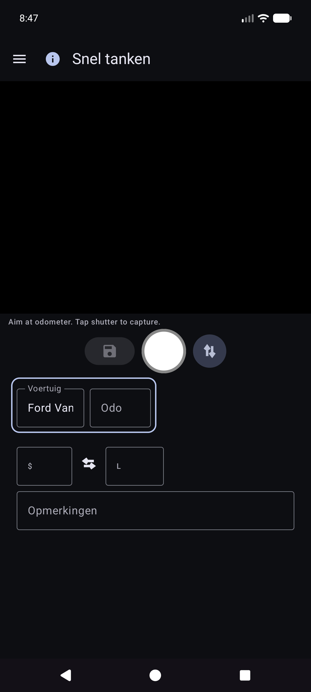
Je blijft op Quick Fill voor de volgende stop (velden worden gewist na opslaan). Werk volledig offline; synchronisatie wordt later op de achtergrond uitgevoerd indien geconfigureerd.
Tip op het scherm (onder de instructieregel): Sluiter = vastleggen · Schijf = opslaan · ↕ = odo/pompmodus · ↔ = kosten/volume omwisselen.
Menu → Nieuwe uitgave.

Menu → Rapporten → Onkostenlijst — blader door de niet-brandstofkosten; open een item om te bewerken.

Open een rij uit de lijst. Correcte leverancier, bedrag, categorie, voertuig en beschrijving. Als de kassabon alleen in een fotoback-up staat (geen leesbaar lokaal bestand), gebruik dan Afbeelding ophalen uit archief wanneer deze wordt weergegeven (werkt op geconfigureerde fotobestemmingen).

Menu → Start rit (na Quick Fill in de lade). Leg de kilometerteller vast of voer deze in, kies het rittype en sla op met het schijf-pictogram. Stop is een snelkoppeling voor Persoonlijk nu op de vastgehouden GPS-locatie. Gebruik ⓘ voor controleherinneringen.

Tripstarts worden opgeslagen als brandstofrijen met een Triptype (geen normale tankbeurten). Ze verschijnen onder Rapporten → Ritmijlen, niet onder Brandstofgeschiedenis.
Menu → Rapporten opent de producthub (overzicht aller tijden + cataloguskaarten). Dit is het enige oppervlak met productrapporten; er is geen afzonderlijk lade-item 'Rapporten en grafieken'.
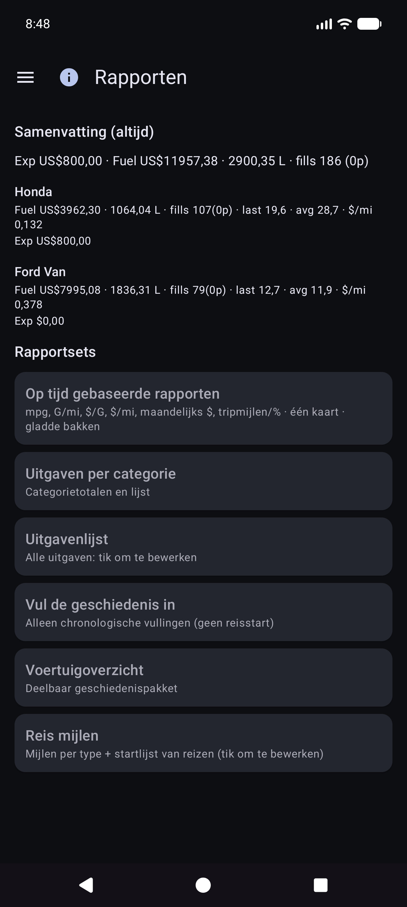
Open een kaart voor de voertuigmodus (Alles / Elk / Enkel), periodefilters, grafieken en delen (TEKST / CSV / PDF). Bovenste balk op rapport kinderen: ☰ + ← (en ⓘ indien geregistreerd).
De hoofdkaartkaart. Optionele statistieken (mpg, volume/afstand zoals G/mi, eenheidsprijs zoals $/G, kosten/afstand, maandelijks $, ritmijlen, rit% per type) met Vloeiende bakken en onafhankelijke Y-schalen (economie links; geld- en reisfamilies aan de rechterkant).
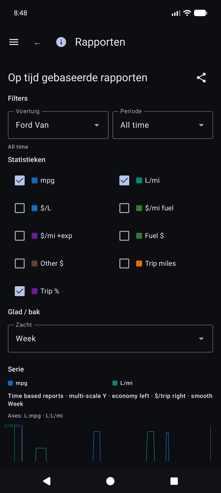
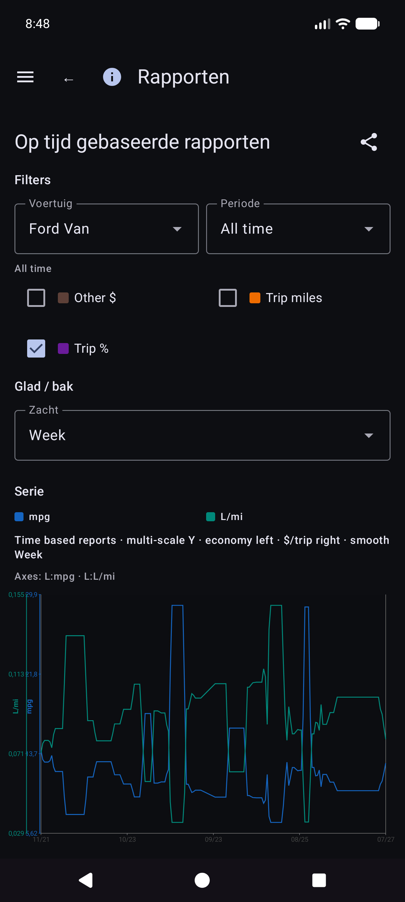
Details van economische wiskunde: REPORTS_METRICS.md.
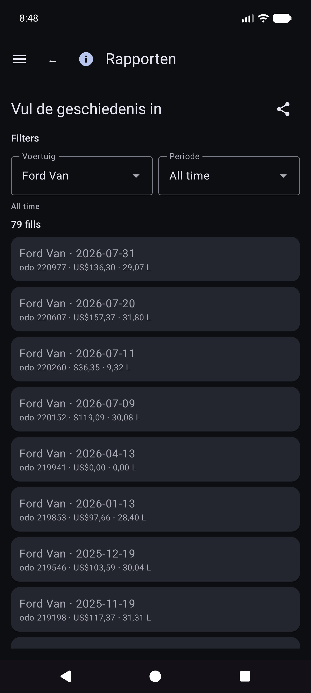
Rapporten → Ritmijlen — mijlen per type, grafieken en een chronologische reisstart-/segmentlijst. Tik op een echt begin om Opvulling bewerken voor die rij te openen.

Open een tankbeurt vanuit Vulgeschiedenis, Brandstofgeschiedenis of Ritmijlen. Indeling: voertuig en kilometerteller, valuta vóór kosten, volume, aantekeningen. Het reistype wordt alleen weergegeven als de rij een reisbegin is. Locatie heeft een samenvatting plus Locatiedetails. Ontbrekende lokale foto met cloudidentiteit: Afbeelding ophalen uit archief.
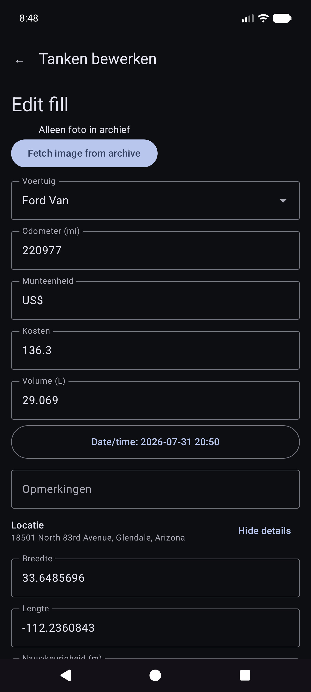
Andere cataloguskaarten omvatten uitgaven per categorie, voertuigoverzicht en uitgavenlijst.
Geld gebruikt de valuta van elke rij wanneer deze is ingesteld. Totalen voor gemengde valuta tonen subtotalen per valuta (geen stille valutaconversie).
Menu → Synchroniseren is de hub voor spreadsheet- en fotobestemmingen (niet alleen verborgen onder Instellingen).

Menu → Instellingen.

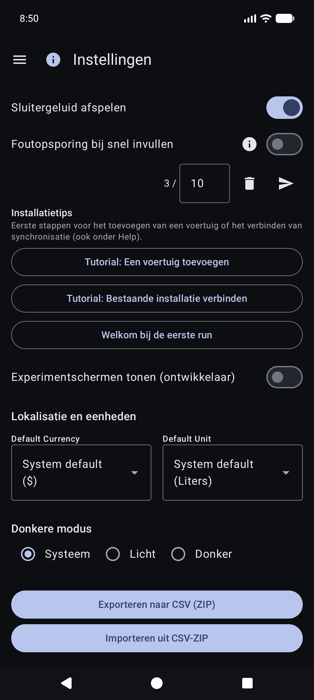
Voor bestemmingen geeft u de voorkeur aan Menu → Synchroniseren. Instellingen tonen mogelijk nog steeds samenvattingsrijen die dezelfde lijsten openen.
CSV exporteren/importeren (ZIP van tabbladen Voertuigen / Uitgaven / Brandstof) is beschikbaar via Instellingen wanneer dit wordt aangeboden door de huidige build.
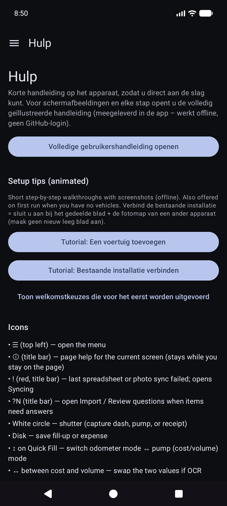